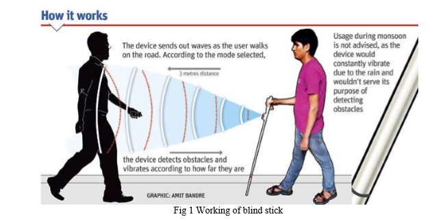

The microcontroller then processes this data and calculates if the obstacle is close enough. If the obstacle is not that close the circuit does nothing. If the obstacle is close the microcontroller sends a signal to sound a buzzer. It also detects and sounds a different buzzer if it where detects water and alerts the blind.
